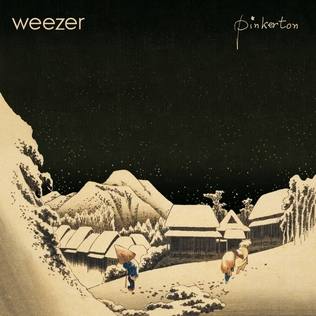

Weezer (The Blue Album) tracklist 1. My Name Is Jonas 2. No One Else 3. The World Has Turned and Left Me Here 4. Buddy Holly 5. Undone - The Sweater Song 6. Surf Wax America 7. Say It Ain't So 8. In the Garage 9. Holiday 10. Only in Dreams

Pinkerton tracklist 1. Tired of Sex 2. Getchoo 3. No Other One 4. Why Bother? 5. Across the Sea 6. The Good Life 7. El Scorcho 8. Pink Triangle 9. Falling for You 10. Butterfly Disc 2 (Bonus Tracks and B-Sides): 1. You Gave Your Love to Me Softly 2. Devotion 3. The Good Life (Radio Remix) 4. Waiting on You (Previously Unreleased) 5. I Just Threw Out the Love of My Dreams 6. The Good Life (Live and Acoustic) 7. Pink Triangle (Radio Remix) 8. I Swear It's True (Previously Unreleased) 9. Pink Triangle (Live and Acoustic) 10. Interview with the band about Pinkerton (Previously Unreleased)
Portals tracklist 1. Don't Let Go 2. Photograph 3. Hash Pipe 4. Island in the Sun 5. Crab 6. Knock-down Drag-out 7. Smile 8. Simple Pages 9. Glorious Day 10. O Girlfriend